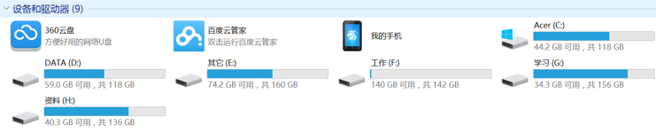
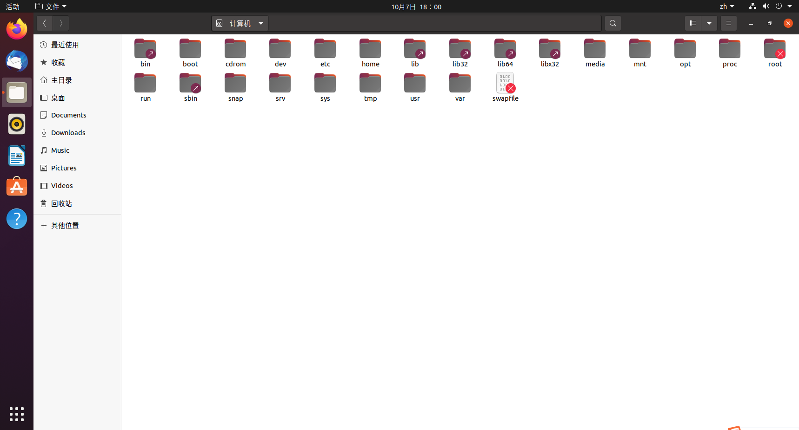
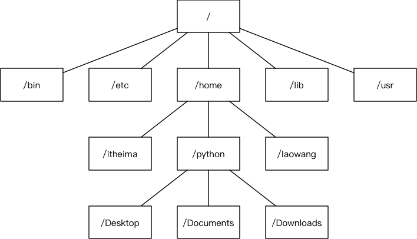
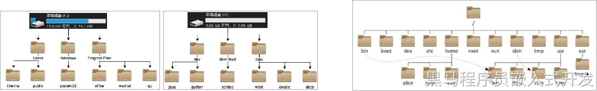
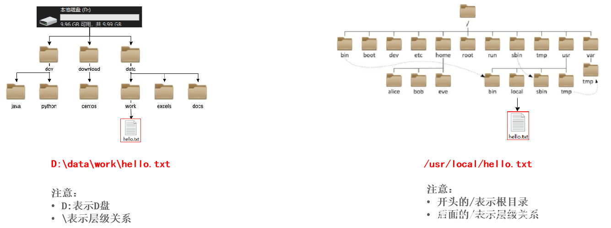

<!DOCTYPE lake>
<h1 data-lake-id="S9SFy" id="S9SFy"><span data-lake-id="u90de1270" id="u90de1270" style="color: rgb(51, 51, 51)">单用户&amp;多用户操作系统(科普)</span></h1><ul list="u5e76db92"><li data-lake-id="u981215e2" fid="ua46d7042" id="u981215e2"><strong><span class="lake-fontsize-12" data-lake-id="u2e79c68e" id="u2e79c68e" style="color: rgb(51, 51, 51)">单用户操作系统</span></strong><span class="lake-fontsize-12" data-lake-id="u25bb10a1" id="u25bb10a1" style="color: rgb(51, 51, 51)">：指一台计算机在同一时间 </span><strong><span class="lake-fontsize-12" data-lake-id="u56bed5cd" id="u56bed5cd" style="color: rgb(51, 51, 51)">只能由一个用户</span></strong><span class="lake-fontsize-12" data-lake-id="ue26a38ec" id="ue26a38ec" style="color: rgb(51, 51, 51)"> 使用，一个用户独自享用系统的全部硬件和软件资源</span></li></ul><p data-lake-id="ucba0a05f" id="ucba0a05f"><strong><span class="lake-fontsize-12" data-lake-id="uac20e1ac" id="uac20e1ac" style="color: rgb(119, 119, 119)">Windows XP</span></strong><span class="lake-fontsize-12" data-lake-id="ub749d99f" id="ub749d99f" style="color: rgb(119, 119, 119)"> 之前的版本都是单用户操作系统</span></p><ul list="ueeb0a973"><li data-lake-id="u4aa0014d" fid="u6797920f" id="u4aa0014d"><strong><span class="lake-fontsize-12" data-lake-id="ub3e84b53" id="ub3e84b53" style="color: rgb(51, 51, 51)">多用户操作系统</span></strong><span class="lake-fontsize-12" data-lake-id="u088949fb" id="u088949fb" style="color: rgb(51, 51, 51)">：指一台计算机在同一时间可以由 </span><strong><span class="lake-fontsize-12" data-lake-id="uf285dbc2" id="uf285dbc2" style="color: rgb(51, 51, 51)">多个用户</span></strong><span class="lake-fontsize-12" data-lake-id="u853d0c65" id="u853d0c65" style="color: rgb(51, 51, 51)"> 使用，多个用户共同享用系统的全部硬件和软件资源</span></li></ul><p data-lake-id="ubf4f928f" id="ubf4f928f"><strong><span class="lake-fontsize-12" data-lake-id="u94d4862b" id="u94d4862b" style="color: rgb(119, 119, 119)">Unix</span></strong><span class="lake-fontsize-12" data-lake-id="u7c690cae" id="u7c690cae" style="color: rgb(119, 119, 119)"> 和 </span><strong><span class="lake-fontsize-12" data-lake-id="u875bf79f" id="u875bf79f" style="color: rgb(119, 119, 119)">Linux</span></strong><span class="lake-fontsize-12" data-lake-id="u49e8d49d" id="u49e8d49d" style="color: rgb(119, 119, 119)"> 的设计初衷就是多用户操作系统</span></p><h1 data-lake-id="leUZg" id="leUZg"><span data-lake-id="uc3118551" id="uc3118551" style="color: rgb(51, 51, 51)">文件系统</span></h1><h2 data-lake-id="CLwUT" id="CLwUT"><span data-lake-id="u965ff1d9" id="u965ff1d9" style="color: rgb(51, 51, 51); background-color: rgb(243, 244, 244)">Windows</span><span data-lake-id="u64936a7b" id="u64936a7b" style="color: rgb(51, 51, 51)"> 文件系统</span></h2><ul list="u02824a07"><li data-lake-id="ud6dca5f4" fid="ubda20c99" id="ud6dca5f4"><span class="lake-fontsize-12" data-lake-id="ue88f52b9" id="ue88f52b9" style="color: rgb(51, 51, 51)">在 </span><span class="lake-fontsize-12" data-lake-id="u73e7ccde" id="u73e7ccde" style="color: rgb(51, 51, 51); background-color: rgb(243, 244, 244)">Windows</span><span class="lake-fontsize-12" data-lake-id="ude22f3c3" id="ude22f3c3" style="color: rgb(51, 51, 51)"> 下，打开 “计算机”，我们看到的是一个个的驱动器盘符：</span></li></ul><p data-lake-id="ud6164d3e" id="ud6164d3e"></p><ul list="u02824a07" start="2"><li data-lake-id="u7ee9d179" fid="ubda20c99" id="u7ee9d179"><span class="lake-fontsize-12" data-lake-id="u939b5d92" id="u939b5d92" style="color: rgb(51, 51, 51)">每个驱动器都有自己的根目录结构，这样形成了多个树并列的情形，如图所示：</span></li></ul><p data-lake-id="u2d540085" id="u2d540085"></p><h2 data-lake-id="dAGTm" id="dAGTm"><span data-lake-id="u24b408d3" id="u24b408d3" style="color: rgb(51, 51, 51); background-color: rgb(243, 244, 244)">Linux</span><span data-lake-id="u0c1570de" id="u0c1570de" style="color: rgb(51, 51, 51)"> 文件系统</span></h2><ul list="u3becfbcd"><li data-lake-id="u2749d8e7" fid="u0edac33b" id="u2749d8e7"><span class="lake-fontsize-12" data-lake-id="u404a2ccd" id="u404a2ccd" style="color: rgb(51, 51, 51)">在 </span><span class="lake-fontsize-12" data-lake-id="u838ae6cb" id="u838ae6cb" style="color: rgb(51, 51, 51); background-color: rgb(243, 244, 244)">Linux</span><span class="lake-fontsize-12" data-lake-id="ubbd5af54" id="ubbd5af54" style="color: rgb(51, 51, 51)"> 下，我们是看不到这些驱动器盘符，我们看到的是文件夹（目录）：</span></li></ul><p data-lake-id="u696b0b2a" id="u696b0b2a"></p><ul list="u3becfbcd" start="2"><li data-lake-id="uc3fc69a4" fid="u0edac33b" id="uc3fc69a4"><span class="lake-fontsize-12" data-lake-id="ud1eea00b" id="ud1eea00b" style="color: rgb(51, 51, 51); background-color: rgb(243, 244, 244)">Ubuntu</span><span class="lake-fontsize-12" data-lake-id="ub77e056b" id="ub77e056b" style="color: rgb(51, 51, 51)"> 没有盘符这个概念，只有一个根目录 </span><span class="lake-fontsize-12" data-lake-id="u459ddb17" id="u459ddb17" style="color: rgb(51, 51, 51); background-color: rgb(243, 244, 244)">/</span><span class="lake-fontsize-12" data-lake-id="u030ad1d0" id="u030ad1d0" style="color: rgb(51, 51, 51)">，所有文件都在它下面</span></li></ul><p data-lake-id="ud6dc13de" id="ud6dc13de"></p><p data-lake-id="udf712b1c" id="udf712b1c"><br/></p><p data-lake-id="u8aa282bf" id="u8aa282bf"><strong><span data-comment-id="48816057" data-lake-id="u593b31e4" id="u593b31e4">ctrl+alt+T 新建终端快捷键</span></strong></p><h2 data-lake-id="b8tuW" id="b8tuW"><span data-lake-id="u0dd5d07c" id="u0dd5d07c" style="color: rgb(51, 51, 51)">Linux 用户根目录</span></h2><p data-lake-id="ub3158363" id="ub3158363"><span class="lake-fontsize-12" data-lake-id="u0f9249e1" id="u0f9249e1" style="color: rgb(51, 51, 51)">位于 </span><span class="lake-fontsize-12" data-lake-id="u2593f191" id="u2593f191" style="color: rgb(51, 51, 51); background-color: rgb(243, 244, 244)">/home/user</span><span class="lake-fontsize-12" data-lake-id="uaa49b6e6" id="uaa49b6e6" style="color: rgb(51, 51, 51)">，称之为用户工作目录或家目录，表示方式：</span></p><span class="yuque-card-unsupported">[codeblock]</span><p data-lake-id="ude2e5101" id="ude2e5101"><br/></p><h2 data-lake-id="IdZ1D" id="IdZ1D"><span data-lake-id="ub6576248" id="ub6576248">Linux的目录结构</span></h2><p data-lake-id="u8acc9e01" id="u8acc9e01"><span data-lake-id="u4f9ad561" id="u4f9ad561">Linux的目录结构是一个树型结构Windows 系统可以拥有多个盘符, 如 C盘、D盘、E盘Linux没有盘符这个概念, 只有一个根目录 /, 所有文件都在它下面</span></p><p data-lake-id="u2cddecc4" id="u2cddecc4"></p><h2 data-lake-id="s5yMw" id="s5yMw"><span data-lake-id="u24179c91" id="u24179c91">Linux路径的描述方式</span></h2><ul list="uf7581219"><li data-lake-id="u21c4166c" fid="u14847970" id="u21c4166c"><span data-lake-id="u50468c82" id="u50468c82">在Linux系统中，路径之间的层级关系，使用：/ 来表示</span></li><li data-lake-id="u07e0bfea" fid="u14847970" id="u07e0bfea"><span data-lake-id="u91449b7d" id="u91449b7d">在Windows系统中，路径之间的层级关系，使用： \ 来表示</span></li></ul><p data-lake-id="u094ee23a" id="u094ee23a"></p><p data-lake-id="u62b01e95" id="u62b01e95"><br/></p><h2 data-lake-id="kyjfL" id="kyjfL"><span data-lake-id="u987b81a4" id="u987b81a4">​</span><br/></h2><h2 data-lake-id="PWlZV" id="PWlZV"><span data-lake-id="u0933d7e2" id="u0933d7e2" style="color: rgb(51, 51, 51); background-color: rgb(243, 244, 244)">Linux</span><span data-lake-id="u6c32fd25" id="u6c32fd25" style="color: rgb(51, 51, 51)"> 主要目录速查表</span></h2><ul list="u560dbee0"><li data-lake-id="u36e2a8b0" fid="u3810c8c2" id="u36e2a8b0"><span class="lake-fontsize-12" data-lake-id="ud9f47ae7" id="ud9f47ae7" style="color: rgb(51, 51, 51); background-color: rgb(243, 244, 244)">/</span><span class="lake-fontsize-12" data-lake-id="u04c5bee3" id="u04c5bee3" style="color: rgb(51, 51, 51)">：根目录，一般根目录下只存放目录，在 linux 下有且只有一个根目录，所有的东西都是从这里开始</span></li><li data-lake-id="uaabb81e8" fid="u3810c8c2" id="uaabb81e8"><span class="lake-fontsize-12" data-lake-id="u7a0aedaf" id="u7a0aedaf" style="color: rgb(51, 51, 51)">当在终端里输入 </span><span class="lake-fontsize-12" data-lake-id="ub7951150" id="ub7951150" style="color: rgb(51, 51, 51); background-color: rgb(243, 244, 244)">/home</span><span class="lake-fontsize-12" data-lake-id="ud7fe612d" id="ud7fe612d" style="color: rgb(51, 51, 51)">，其实是在告诉电脑，先从 </span><span class="lake-fontsize-12" data-lake-id="uf9a2d121" id="uf9a2d121" style="color: rgb(51, 51, 51); background-color: rgb(243, 244, 244)">/</span><span class="lake-fontsize-12" data-lake-id="u65362fd1" id="u65362fd1" style="color: rgb(51, 51, 51)">（根目录）开始，再进入到 </span><span class="lake-fontsize-12" data-lake-id="u85b45844" id="u85b45844" style="color: rgb(51, 51, 51); background-color: rgb(243, 244, 244)">home</span><span class="lake-fontsize-12" data-lake-id="udc37da2e" id="udc37da2e" style="color: rgb(51, 51, 51)"> 目录</span></li><li data-lake-id="u48471608" fid="u3810c8c2" id="u48471608"><span class="lake-fontsize-12" data-lake-id="u7a9eac87" id="u7a9eac87" style="color: rgb(51, 51, 51); background-color: rgb(243, 244, 244)">/bin</span><span class="lake-fontsize-12" data-lake-id="u9016b4b1" id="u9016b4b1" style="color: rgb(51, 51, 51)">、</span><span class="lake-fontsize-12" data-lake-id="uc865b901" id="uc865b901" style="color: rgb(51, 51, 51); background-color: rgb(243, 244, 244)">/usr/bin</span><span class="lake-fontsize-12" data-lake-id="uecf45037" id="uecf45037" style="color: rgb(51, 51, 51)">：可执行二进制文件的目录，如常用的命令 ls、tar、mv、cat 等</span></li><li data-lake-id="u9478dc9b" fid="u3810c8c2" id="u9478dc9b"><span class="lake-fontsize-12" data-lake-id="ub015a01e" id="ub015a01e" style="color: rgb(51, 51, 51); background-color: rgb(243, 244, 244)">/boot</span><span class="lake-fontsize-12" data-lake-id="u84ed86ea" id="u84ed86ea" style="color: rgb(51, 51, 51)">：放置 linux 系统启动时用到的一些文件，如 linux 的内核文件：</span><span class="lake-fontsize-12" data-lake-id="ue1cab322" id="ue1cab322" style="color: rgb(51, 51, 51); background-color: rgb(243, 244, 244)">/boot/vmlinuz</span><span class="lake-fontsize-12" data-lake-id="ud9560783" id="ud9560783" style="color: rgb(51, 51, 51)">，系统引导管理器：</span><span class="lake-fontsize-12" data-lake-id="u34923dd0" id="u34923dd0" style="color: rgb(51, 51, 51); background-color: rgb(243, 244, 244)">/boot/grub</span></li><li data-lake-id="u4355e02e" fid="u3810c8c2" id="u4355e02e"><span class="lake-fontsize-12" data-lake-id="ufdc1edff" id="ufdc1edff" style="color: rgb(51, 51, 51); background-color: rgb(243, 244, 244)">/dev</span><span class="lake-fontsize-12" data-lake-id="u05afa35b" id="u05afa35b" style="color: rgb(51, 51, 51)">：存放linux系统下的设备文件，访问该目录下某个文件，相当于访问某个设备，常用的是挂载光驱</span><span class="lake-fontsize-12" data-lake-id="u93bdf28d" id="u93bdf28d" style="color: rgb(51, 51, 51); background-color: rgb(243, 244, 244)">mount /dev/cdrom /mnt</span></li><li data-lake-id="ubb969dc7" fid="u3810c8c2" id="ubb969dc7"><span class="lake-fontsize-12" data-lake-id="u28cf8921" id="u28cf8921" style="color: rgb(51, 51, 51); background-color: rgb(243, 244, 244)">/etc</span><span class="lake-fontsize-12" data-lake-id="uc2d8e588" id="uc2d8e588" style="color: rgb(51, 51, 51)">：系统配置文件存放的目录，不建议在此目录下存放可执行文件，重要的配置文件有</span></li><li data-lake-id="u13d5aa76" fid="u3810c8c2" id="u13d5aa76"><span class="lake-fontsize-12" data-lake-id="ubb6c31b2" id="ubb6c31b2" style="color: rgb(51, 51, 51); background-color: rgb(243, 244, 244)">/etc/inittab</span></li><li data-lake-id="uf14c9da0" fid="u3810c8c2" id="uf14c9da0"><span class="lake-fontsize-12" data-lake-id="u28ecef4c" id="u28ecef4c" style="color: rgb(51, 51, 51); background-color: rgb(243, 244, 244)">/etc/fstab</span></li><li data-lake-id="u90631394" fid="u3810c8c2" id="u90631394"><span class="lake-fontsize-12" data-lake-id="u4423e4e4" id="u4423e4e4" style="color: rgb(51, 51, 51); background-color: rgb(243, 244, 244)">/etc/init.d</span></li><li data-lake-id="ufe15bb8c" fid="u3810c8c2" id="ufe15bb8c"><span class="lake-fontsize-12" data-lake-id="u62bfa3b9" id="u62bfa3b9" style="color: rgb(51, 51, 51); background-color: rgb(243, 244, 244)">/etc/X11</span></li><li data-lake-id="uf6175fe1" fid="u3810c8c2" id="uf6175fe1"><span class="lake-fontsize-12" data-lake-id="uc50b2281" id="uc50b2281" style="color: rgb(51, 51, 51); background-color: rgb(243, 244, 244)">/etc/sysconfig</span></li><li data-lake-id="u6026c3f5" fid="u3810c8c2" id="u6026c3f5"><span class="lake-fontsize-12" data-lake-id="u84b3cc57" id="u84b3cc57" style="color: rgb(51, 51, 51); background-color: rgb(243, 244, 244)">/etc/xinetd.d</span></li><li data-lake-id="u709cd6a1" fid="u3810c8c2" id="u709cd6a1"><span class="lake-fontsize-12" data-lake-id="u5882e8f1" id="u5882e8f1" style="color: rgb(51, 51, 51); background-color: rgb(243, 244, 244)">/home</span><span class="lake-fontsize-12" data-lake-id="uf3861c97" id="uf3861c97" style="color: rgb(51, 51, 51)">：系统默认的用户家目录，新增用户账号时，用户的家目录都存放在此目录下</span></li><li data-lake-id="u50b3c9fb" fid="u3810c8c2" id="u50b3c9fb"><span class="lake-fontsize-12" data-lake-id="u6a9f6025" id="u6a9f6025" style="color: rgb(51, 51, 51); background-color: rgb(243, 244, 244)">~</span><span class="lake-fontsize-12" data-lake-id="u17fce798" id="u17fce798" style="color: rgb(51, 51, 51)"> 表示当前用户的家目录</span></li><li data-lake-id="ubd823185" fid="u3810c8c2" id="ubd823185"><span class="lake-fontsize-12" data-lake-id="ud1cc47b8" id="ud1cc47b8" style="color: rgb(51, 51, 51); background-color: rgb(243, 244, 244)">~edu</span><span class="lake-fontsize-12" data-lake-id="uf56cfcd1" id="uf56cfcd1" style="color: rgb(51, 51, 51)"> 表示用户 </span><span class="lake-fontsize-12" data-lake-id="ua71cea5b" id="ua71cea5b" style="color: rgb(51, 51, 51); background-color: rgb(243, 244, 244)">edu</span><span class="lake-fontsize-12" data-lake-id="u9d515040" id="u9d515040" style="color: rgb(51, 51, 51)"> 的家目录</span></li><li data-lake-id="u5f72f5ba" fid="u3810c8c2" id="u5f72f5ba"><span class="lake-fontsize-12" data-lake-id="ude35e519" id="ude35e519" style="color: rgb(51, 51, 51); background-color: rgb(243, 244, 244)">/lib</span><span class="lake-fontsize-12" data-lake-id="u999da49d" id="u999da49d" style="color: rgb(51, 51, 51)">、</span><span class="lake-fontsize-12" data-lake-id="ua41aac3d" id="ua41aac3d" style="color: rgb(51, 51, 51); background-color: rgb(243, 244, 244)">/usr/lib</span><span class="lake-fontsize-12" data-lake-id="u735f8a45" id="u735f8a45" style="color: rgb(51, 51, 51)">、</span><span class="lake-fontsize-12" data-lake-id="ub90dc72f" id="ub90dc72f" style="color: rgb(51, 51, 51); background-color: rgb(243, 244, 244)">/usr/local/lib</span><span class="lake-fontsize-12" data-lake-id="uecebed65" id="uecebed65" style="color: rgb(51, 51, 51)">：系统使用的函数库的目录，程序在执行过程中，需要调用一些额外的参数时需要函数库的协助</span></li><li data-lake-id="u2d0c0947" fid="u3810c8c2" id="u2d0c0947"><span class="lake-fontsize-12" data-lake-id="u7d66e21c" id="u7d66e21c" style="color: rgb(51, 51, 51); background-color: rgb(243, 244, 244)">/lost+fount</span><span class="lake-fontsize-12" data-lake-id="u01aad401" id="u01aad401" style="color: rgb(51, 51, 51)">：系统异常产生错误时，会将一些遗失的片段放置于此目录下</span></li><li data-lake-id="u24eff5df" fid="u3810c8c2" id="u24eff5df"><span class="lake-fontsize-12" data-lake-id="uae432e79" id="uae432e79" style="color: rgb(51, 51, 51); background-color: rgb(243, 244, 244)">/mnt</span><span class="lake-fontsize-12" data-lake-id="ud0b941ce" id="ud0b941ce" style="color: rgb(51, 51, 51)">、 </span><span class="lake-fontsize-12" data-lake-id="uffcf2d0a" id="uffcf2d0a" style="color: rgb(51, 51, 51); background-color: rgb(243, 244, 244)">/media</span><span class="lake-fontsize-12" data-lake-id="u500ea95e" id="u500ea95e" style="color: rgb(51, 51, 51)">：光盘默认挂载点，通常光盘挂载于 /mnt/cdrom 下，也不一定，可以选择任意位置进行挂载</span></li><li data-lake-id="u5106b646" fid="u3810c8c2" id="u5106b646"><span class="lake-fontsize-12" data-lake-id="u347adabc" id="u347adabc" style="color: rgb(51, 51, 51); background-color: rgb(243, 244, 244)">/opt</span><span class="lake-fontsize-12" data-lake-id="uf1e7eb21" id="uf1e7eb21" style="color: rgb(51, 51, 51)">：给主机额外安装软件所摆放的目录</span></li><li data-lake-id="u2b9221ae" fid="u3810c8c2" id="u2b9221ae"><span class="lake-fontsize-12" data-lake-id="u40ef31ec" id="u40ef31ec" style="color: rgb(51, 51, 51); background-color: rgb(243, 244, 244)">/proc</span><span class="lake-fontsize-12" data-lake-id="uf32a3218" id="uf32a3218" style="color: rgb(51, 51, 51)">：此目录的数据都在内存中，如系统核心，外部设备，网络状态，由于数据都存放于内存中，所以不占用磁盘空间，比较重要的文件有：/proc/cpuinfo、/proc/interrupts、/proc/dma、/proc/ioports、/proc/net/* 等</span></li><li data-lake-id="ua3d44fa7" fid="u3810c8c2" id="ua3d44fa7"><span class="lake-fontsize-12" data-lake-id="u0705fb76" id="u0705fb76" style="color: rgb(51, 51, 51); background-color: rgb(243, 244, 244)">/root</span><span class="lake-fontsize-12" data-lake-id="uf6059f01" id="uf6059f01" style="color: rgb(51, 51, 51)">：系统管理员root的家目录</span></li><li data-lake-id="u61f7a10f" fid="u3810c8c2" id="u61f7a10f"><span class="lake-fontsize-12" data-lake-id="ue95b9994" id="ue95b9994" style="color: rgb(51, 51, 51); background-color: rgb(243, 244, 244)">/sbin</span><span class="lake-fontsize-12" data-lake-id="u4b03f470" id="u4b03f470" style="color: rgb(51, 51, 51)">、</span><span class="lake-fontsize-12" data-lake-id="udff1a307" id="udff1a307" style="color: rgb(51, 51, 51); background-color: rgb(243, 244, 244)">/usr/sbin</span><span class="lake-fontsize-12" data-lake-id="u0362a2ee" id="u0362a2ee" style="color: rgb(51, 51, 51)">、</span><span class="lake-fontsize-12" data-lake-id="udbfe2c12" id="udbfe2c12" style="color: rgb(51, 51, 51); background-color: rgb(243, 244, 244)">/usr/local/sbin</span><span class="lake-fontsize-12" data-lake-id="u80e935ec" id="u80e935ec" style="color: rgb(51, 51, 51)">：放置系统管理员使用的可执行命令，如 fdisk、shutdown、mount 等。与 /bin 不同的是，这几个目录是给系统管理员 root 使用的命令，一般用户只能"查看"而不能设置和使用</span></li><li data-lake-id="u3e43995b" fid="u3810c8c2" id="u3e43995b"><span class="lake-fontsize-12" data-lake-id="u8fdc40c2" id="u8fdc40c2" style="color: rgb(51, 51, 51); background-color: rgb(243, 244, 244)">/tmp</span><span class="lake-fontsize-12" data-lake-id="ua6c13c2f" id="ua6c13c2f" style="color: rgb(51, 51, 51)">：一般用户或正在执行的程序临时存放文件的目录，任何人都可以访问，重要数据不可放置在此目录下</span></li><li data-lake-id="u21cbba50" fid="u3810c8c2" id="u21cbba50"><span class="lake-fontsize-12" data-lake-id="u170f9e1f" id="u170f9e1f" style="color: rgb(51, 51, 51); background-color: rgb(243, 244, 244)">/srv</span><span class="lake-fontsize-12" data-lake-id="u97898e34" id="u97898e34" style="color: rgb(51, 51, 51)">：服务启动之后需要访问的数据目录，如 www 服务需要访问的网页数据存放在 /srv/www 内</span></li><li data-lake-id="u68f04d3b" fid="u3810c8c2" id="u68f04d3b"><span class="lake-fontsize-12" data-lake-id="u9948c6e4" id="u9948c6e4" style="color: rgb(51, 51, 51); background-color: rgb(243, 244, 244)">/usr</span><span class="lake-fontsize-12" data-lake-id="u50e81d8e" id="u50e81d8e" style="color: rgb(51, 51, 51)">：应用程序存放目录</span></li><li data-lake-id="u7b1b965c" fid="u3810c8c2" id="u7b1b965c"><span class="lake-fontsize-12" data-lake-id="u47cf8063" id="u47cf8063" style="color: rgb(51, 51, 51); background-color: rgb(243, 244, 244)">/usr/bin</span><span class="lake-fontsize-12" data-lake-id="uf33f0b04" id="uf33f0b04" style="color: rgb(51, 51, 51)">：存放应用程序</span></li><li data-lake-id="uc93a5599" fid="u3810c8c2" id="uc93a5599"><span class="lake-fontsize-12" data-lake-id="u46db4797" id="u46db4797" style="color: rgb(51, 51, 51); background-color: rgb(243, 244, 244)">/usr/share</span><span class="lake-fontsize-12" data-lake-id="uf3d91c3a" id="uf3d91c3a" style="color: rgb(51, 51, 51)">：存放共享数据</span></li><li data-lake-id="u71de8fa0" fid="u3810c8c2" id="u71de8fa0"><span class="lake-fontsize-12" data-lake-id="ube0b1e80" id="ube0b1e80" style="color: rgb(51, 51, 51); background-color: rgb(243, 244, 244)">/usr/lib</span><span class="lake-fontsize-12" data-lake-id="u50458974" id="u50458974" style="color: rgb(51, 51, 51)">：存放不能直接运行的，却是许多程序运行所必需的一些函数库文件</span></li><li data-lake-id="u99b02141" fid="u3810c8c2" id="u99b02141"><span class="lake-fontsize-12" data-lake-id="u45fe2815" id="u45fe2815" style="color: rgb(51, 51, 51); background-color: rgb(243, 244, 244)">/usr/local</span><span class="lake-fontsize-12" data-lake-id="u82234bbb" id="u82234bbb" style="color: rgb(51, 51, 51)">：存放软件升级包</span></li><li data-lake-id="u902970f4" fid="u3810c8c2" id="u902970f4"><span class="lake-fontsize-12" data-lake-id="ude3ce6cd" id="ude3ce6cd" style="color: rgb(51, 51, 51); background-color: rgb(243, 244, 244)">/usr/share/doc</span><span class="lake-fontsize-12" data-lake-id="ua77a28ce" id="ua77a28ce" style="color: rgb(51, 51, 51)">：系统说明文件存放目录</span></li><li data-lake-id="u360c9d3a" fid="u3810c8c2" id="u360c9d3a"><span class="lake-fontsize-12" data-lake-id="u36f3c38f" id="u36f3c38f" style="color: rgb(51, 51, 51); background-color: rgb(243, 244, 244)">/usr/share/man</span><span class="lake-fontsize-12" data-lake-id="ubdf82416" id="ubdf82416" style="color: rgb(51, 51, 51)">：程序说明文件存放目录</span></li><li data-lake-id="u0f52c933" fid="u3810c8c2" id="u0f52c933"><span class="lake-fontsize-12" data-lake-id="u343a15bd" id="u343a15bd" style="color: rgb(51, 51, 51); background-color: rgb(243, 244, 244)">/var</span><span class="lake-fontsize-12" data-lake-id="ueb37f6be" id="ueb37f6be" style="color: rgb(51, 51, 51)">：放置系统执行过程中经常变化的文件</span></li><li data-lake-id="u40dee8cd" fid="u3810c8c2" id="u40dee8cd"><span class="lake-fontsize-12" data-lake-id="u90fd658f" id="u90fd658f" style="color: rgb(51, 51, 51); background-color: rgb(243, 244, 244)">/var/log</span><span class="lake-fontsize-12" data-lake-id="u4286f3d0" id="u4286f3d0" style="color: rgb(51, 51, 51)">：随时更改的日志文件</span></li><li data-lake-id="u00f47aeb" fid="u3810c8c2" id="u00f47aeb"><span class="lake-fontsize-12" data-lake-id="u2451c493" id="u2451c493" style="color: rgb(51, 51, 51); background-color: rgb(243, 244, 244)">/var/spool/mail</span><span class="lake-fontsize-12" data-lake-id="ubbb61731" id="ubbb61731" style="color: rgb(51, 51, 51)">：邮件存放的目录</span></li><li data-lake-id="u70ae96a8" fid="u3810c8c2" id="u70ae96a8"><span class="lake-fontsize-12" data-lake-id="ub6489c04" id="ub6489c04" style="color: rgb(51, 51, 51); background-color: rgb(243, 244, 244)">/var/run</span><span class="lake-fontsize-12" data-lake-id="u0398dcd2" id="u0398dcd2" style="color: rgb(51, 51, 51)">：程序或服务启动后，其 PID 存放在该目录下</span></li></ul>